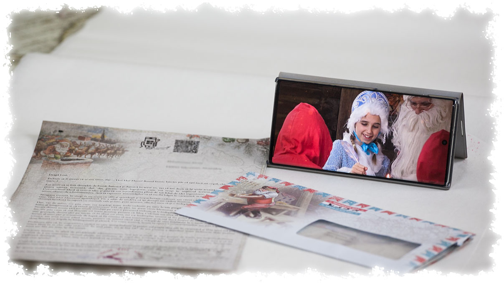

Scrisori-2021
Scrisori-2021


Este necesar sa completati aplicatia de pe site pentru crearea unei scrisori. Daca dati click aici sau pe butonul mare rosu de pe pagina principala a site-ului, initiati procesul de creare a unei scrisori in trei pasi.
Scrisorile se depun la oficul postal sau se predau curierului, in fiecare zi dupa confirmare platii, pana la ora 12:00. Astfel, scrisoare dumneavoastra va fi gata de livrare in ziua urmatoare. Daca ati ales expedirea prin Posta Romana, veti primi scrisoare in 2-4 zile lucratoare, iar daca ati ales Fan Courier, scrisoarea va ajunge la dumneavoastra in 48 de ore.
Pretul serviciului de trimitere a unei scrisori prin Posta Romana este de 24,90 lei, varianta simpla, si 28,90 lei, varianta recomandata. Pretul include costul de livrare. In ambele cazuri platiti costul serviciului in avans, adica inainte de trimiterea scrisorii. De asemenea, exista optiunea de expediere a scrisorii prin Fan Courier, cu livrare în ziua urmatoare (verificați cum este organizat acest serviciu în Romania și daca este profitabil de utilizat). Daca selectati aceasta optiune, pretul scrisoarii va fi de 24,90 lei+16-23 lei (taxa Fan Curier) - in total 39-44 lei. In acest caz, plata se efectueaza ramburs, la primirea scrisorii (pentru anumite zone din tara taxa Fan Courier poate sa depaseasca suma de 16-23 lei, suma finala apare cand terminati completarea formularului pentru expediere cu plata ramburs).
Scrisoarea, in ciuda organizarii excelente si a bunei functionari a traficului postal in Romania, poate sa intarzie sau sa nu ajunga la destinatie. Scrisoarea ar trebui sa ajunga in maxim 3-4 zile, daca a fost comandata prin serviciul standard al Postei Romane, sau in 48 de ore, daca a fost comandata prin serviciul cu plata ramburs Fan Courier. Daca scrisoarea nu a fost expediata in acest interval, acceptam reclamatia dumneavoastra. Vom verifica starea comenzii si, daca scrisoarea se afla la oficiul postal de care apartineti, va vom informa, pentru a intra in posesia acesteia. Daca scrisoarea s-a pierdut, cu acordul dumneavoastra, vom trimite o nou scrisoare, fara costuri suplimentare. In cele din urma, daca scrisoarea tot nu ajunge, iar adresa introdusa este corecta, va vom returna banii.
Pentru a fi siguri ca scrisoarea va ajunge cu cateva zile inainte de Craciun si ca va fi o adevarata surpriza, pentru a o integra in ritualul specific, alaturi de brad si cadouri, este bine sa aveti scrisoarea in posesia dumneavoastra cu cel putin o saptamana inainte de Sarbatori. Comandand cu suficient de mult timp inainte, evitati aglomeratia din luna decembrie, de la serviciile postale si de la cele de curierat.
Scrisorile de pe site-ul nostru sunt unice, destinate unui singur copil. Nu este posibila crearea unei scrisori pentru un grup de copii. Motivul pentru aceast tipar este chiar spiritul Craciunului, cand fiecarui copil i se fac daruri personalizate. Orice micut merita atenția speciala a lui Mos Craciun. La fel, scrisoarea va fi speciala, iar Mosul se adreseaza celui mic personal, ii stie numele, ii enumera virtutile si faptele bune si il lasa sa inteleaga ca ii cunoaste dorintele si ca i le va indeplini. Acest lucru nu este posibil in cazul unui grup.
Prin urmare, nu exista posibilitatea de a mentiona doi sau mai multi copii intr-o singura scrisoare. Pentru a oferi o solutie parinților care au doi sau trei copii, am creat mai multe tipuri de scrisori, astfel incat doi copii nu vor primi acelasi text de baza. Cu toate acestea, nu exista posibilitatea de a alege conținutul de baza (predefinit) al scrisorii. Dupa plasarea comenzii, la sfarsitul procesului, aveti posibilitatea de a alege optiunea "Comandati inca o scrisoarea cu continut diferit ". Singurul lucru de care trebuie sa tineți cont este faptul ca fiecare comanda se face consecutiv. Prin urmare, trebuie sa va asigurati ca sesiunea de comanda nu expira, deoarece, in acest caz sistemul va porni din nou de la primul tip de scrisoare.